Table of Contents
- 1 - Objectifs, pointeurs utiles
- 2 - Définition d'une classe pour représenter des images arbitraires
- 3 - Introduction des images couleurs.
- 4 - Premier itérateur sur images quelconques.
- 5 - Un importeur / exporteur PBM générique
- 6 Premier test: on inverse les canaux rouge et bleu
- 7 On rajoute les accesseurs et un itérateur générique
- 8 Créer les nouveaux accesseurs à la composante rouge et bleue
- 9 Itérateurs génériques non constants
- 10 Espace TSV (HSV) et histogramme d'une image couleur
- 11 Egalisation d'image couleur
- 12 Un peu d'imagination
- 13 TP à rendre
( Archive images PPM: https:./images.zip )
1 - Objectifs, pointeurs utiles
L'objectif de ce TP est de vous familiariser avec la programmation générique en C++. A l'issue de cette séance, vous aurez pratiquer:
- l'écriture de classes génériques via les patrons de classe
- la définition de concepts et l'écriture de modèle satisfaisant les concepts
- l'écriture de nouveaux itérateurs.
- l'écriture de fonctions génériques avec des itérateurs.
Le fil conducteur est l'écriture d'une classe générique pour représenter des images 2D quelconques, c'est-à-dire ici des images couleurs (24bits) et des images en niveaux de gris (8bits). Vous développerez un certain nombre de services autour de ces images:
- création d'image vide
- lecture/écriture d'images PGM et PPM (le format le plus simple possible de stockage)
- inversion des couleurs.
- extraction des composantes rouges, vertes ou bleues.
- vision "vieille télé" des images
- histogramme(s) de l'image
- correction de contraste d'images couleurs et niveaux de gris par égalisation d'histogramme(s)
Les sites suivants pourront être utile pendant le TP:
- [http://www.cplusplus.com/ Site C++: tutoriels, références]
- [https://en.cppreference.com/w/ Site C++: références très complètes]
- [http://www.parashift.com/c++-faq-lite/index.html C++ FAQ]
Note: Tout bon logiciel de manipulation d'image peut importer ou exporter du portable pixmap (PBM, PGM, PPM). Le logiciel ImageMagick (commandes convert et display notamment) est bien pratique pour convertir en ligne de commande une image:
prompt> convert toto.jpg toto.ppm prompt> display toto.ppm
2 - Définition d'une classe pour représenter des images arbitraires
Nous cherchons à représenter des images dont le type des valeurs peut être défini à l'instanciation. Par exemple, on voudra écrire:
Nous allons utiliser les patrons de classe avec le type de la valeur de chaque pixel comme paramètre. Comme dans le TP1 (TP1 Traitement d'images en niveaux de gris (POO simple, surcharge d'opérateurs, entrées/sorties).), on utilisera le conteneur std::vector pour stocker le tableau de taille W*H, avec W et H la largeur et la hauteur de l'image. Un extrait du fichier entête donne:
On utilisera la classe std::vector de la STL. Cela nous évitera toute allocation dynamique ! Il suffit soit de l'initialiser avec la bonne taille (i.e. donc largeur * hauteur), soit d'appeler vector::resize pour changer la taille. Ecrivez donc cette première version de la classe Image2D, avec les deux constructeurs précisés. Faut-il réécrire le constructeur par copie et l'affectation ?
- Note
- Faites des copier/coller avec votre classe GrayLevelImage2D du TP précédent.
-
les méthodes seront aussi écrites dans le fichier entête Image2D.hpp, soit directement, soit après la définition de la classe. Par exemple, on pourra écrire: int w() const { return m_width; }
On testera les méthodes précédents en créant un fichier testGrayLevelImage2D.cpp avec (au moins) les lignes suivantes.
Vous pourrez utiliser le Makefile suivant:
LD=g++
CXX=g++ -g -c
EXEC_SRC=\
testGrayLevelImage2D.cpp
MODULE_SRC=\
MODULE_OBJ=${MODULE_SRC:.cpp=.o}
EXEC_OBJ=${EXEC_SRC:.cpp=.o}
EXEC_PRG=${EXEC_SRC:.cpp=}
all: ${EXEC_PRG} ${MODULE_OBJ} ${EXEC_OBJ}
testGrayLevelImage2D: testGrayLevelImage2D.o ${MODULE_OBJ}
${LD} ${MODULE_OBJ} $< -o $@
.cpp.o:
${CXX} $<
clean:
rm -f ${EXEC_PRG} ${MODULE_OBJ} ${EXEC_OBJ}
Il vous suffira alors à vous de taper la commande make dans votre terminal pour que tout soit compilé. L'exécution affiche
5 5 5 5 5 5 5 5 5 5 5 5 5 5 5 5 5 5 5 5 5 5 5 5 5 5 5 5 5 5 5 5 5 5 5 5 5 5 5 5 5 5 5 5 5 5 5 5 5 5 5 5 5 5 5 5 5 5 5 5 5 5 5 5
En un sens, vous avez transformé votre classe non générique GrayLevelImage2D en une classe générique Image2D, puis vous avez paramétré Image2D de manière à représenter des images en niveaux de gris. Pour le moment, vous devez avoir l'impression d'avoir fait du boulot pour pas grand chose. C'est normal, mais ça va s'arranger.
3 - Introduction des images couleurs.
On va instancier une image couleur. Pour ce faire, il faut avoir une classe qui représente une couleur. C'est la classe Color (fichier Color.hpp) donnée ci-dessous.
Ecrivez un petit programme de test testColorImage2D.cpp sur le modèle de testGrayLevelImage2D.cpp afin de tester l'instanciation d'une image couleur sous la forme
4 - Premier itérateur sur images quelconques.
On repart du modèle des itérateurs que l'on avait fait au TP1, c'est-à-dire qu'on va définir un itérateur dans une image comme une classe dérivée d'un itérateur sur un std::vector. Cela donne ce genre de code:
On rajoute aussi les méthodes usuelles begin, end, start.
Maintenant le code suivant vous génère une image avec pleins de couleurs et l'exporte en PPM.
qui doit vous afficher:
Ecrivez ensuite une version const de la classe Image2D::Iterator. Vous appelerez cette classe Image2D::ConstIterator et vous écrirez alors les versions const des méthodes begin, end, start.
- Note
- La classe Image2D::ConstIterator dérive de
Container::const_iterator(donc des itérateurs non mutables de la classevector<T>).
Notez maintenant que la boucle (*) du programme précédent peut être réécrite avec ConstIterator sous la forme suivante:
- Note
- A partir de C++11, on écrirait aussi les méthodes
cbegin()etcend()(etcstartici) pour récupérer un const-itérateur, que l'on utiliserait si l'on veut forcer leur usage.
5 - Un importeur / exporteur PBM générique
Il est clair qu'on ne peut pas écrire le même code pour lire/écrire du PGM (image niveaux de gris) ou du PPM (image couleur). Cela va a priori à l'encontre de la généricité de Image2D. Ce n'est pas un problème ici, on va juste utiliser la spécialisation des classes. Comme on ne veut pas spécialiser tout Image2D, on va plutôt créer des classes à part pour importer ou exporter les images. Par exemple, pour exporter/sauvegarder une image, on définit une classe et ses spécialisations:
Plus précisément, complétez le code suivant
Maintenant, dans l'exemple testColorImage2D.cpp, vous pouvez sauvegarder l'image couleur "colors.ppm" ainsi:
Il ne vous reste plus qu'à écrire la classe Image2DReader pour lire/importer une image en niveaux de gris ou une image couleur. On procède exactement de la même manière.
- Warning
- Attention, il faut passer l'image en référence dans
static bool Image2DReader<TValue>::read(Image & img, std::istream & input ), i.e. non const, car vous allez modifier cette image dans cette méthode de classe.
6 Premier test: on inverse les canaux rouge et bleu
Comme on peut lire/écrire des images PPM, on peut maintenant faire du traitement d'image. Ecrivez un petit programme invert-red-blue.cpp en ligne de commande qui inverse les canaux rouge et bleu d'une image donnée en paramètre, puis sauve le résultat. On l'appelerait ainsi:
prompt$ g++ invert-red-blue.cpp -o invert-red-blue prompt$ ./invert-red-blue kowloon.ppm kowloon-inv.ppm
L'idée est de parcourir l'image par pixel par pixel, et d'inverser les canaux rouge et bleu de chaque pixel. Cela donne:
| kowloon.ppm | kowloon-inv.ppm |
On note ici que la généricité n'est pas essentielle, elle a juste permis de factoriser le code pour représenter les images en niveaux de gris et couleur.
7 On rajoute les accesseurs et un itérateur générique
Il est délicat de manipuler les images couleur de la même façon que les images en niveaux de gris, car l'information couleur a plus de degrés de liberté que l'information niveaux de gris. Pourtant, on peut aussi "linéariser" la couleur (i.e. la voir comme un axe) de différentes façons:
- on ne regarde qu'une composante (rouge, vert, bleu). Dans ce cas, la composante concernée est une sorte d'image en niveaux de gris
- on ne regarde que la valeur de la couleur dans le modèle TSV de couleur. Dans ce cas là, on ne regarde que la brillance de la couleur, pas sa teinte.
- on pourrait regarder d'autres modèles de couleur et ne garder qu'un seul axe.
Or, nos itérateurs (ConstIterator et Iterator) sont un peu simplets. Leur valeur pointée est toujours une couleur. On va définir des itérateurs sélectifs qui ne voient qu'une composante de la couleur (en lecture et en écriture). Plutôt que de les réécrire à chaque fois, on définit la notion d'accesseur, puis nos nouveaux itérateurs seront paramétrés par un accesseur.
Dans ce TP, nos accesseurs n'auront même pas besoin d'instance pour fonctionner (e.g., sélectionner le canal rouge ne nécessite pas d'information propre). Leur méthodes access seront donc des méthodes de classe (mot-clé static) et non d'instance. Voilà ci-dessous deux exemples d'accesseur:
- Note
- Observez-bien l'accesseur à la composante verte (ColorGreenAccessor). Cet accesseur nous permettra de tranformer un itérateur
itsur image de couleur (donc*itest la couleur de pixel, de type Color) en un itérateur sur image couleur mais oùitest la composante verte du pixel, de typeunsignedchar.
Comment se servir des accesseurs dans les itérateurs ? On va "simplement" définir un itérateur générique (paramétré par un type Accessor), qui hérite de votre itérateur ConstIterator, et qui utilise l'accesseur au moment du déréférencement (operator*). Un extrait du code donne donc:
Complétez le constructeur de GenericConstIterator (qui doit appeler sa super-classe ConstIterator). Ensuite surchargez les méthodes begin, end, start de Image2D avec des patrons de méthodes. Par exemple, un start générique peut s'écrire ainsi:
Le code suivant doit maintenant fonctionner. Il charge une image couleur et sauve sa composante verte sous forme d'image en niveaux de gris.
prompt$ ./save-green-channel papillon.ppm papillon-green.pgm
| 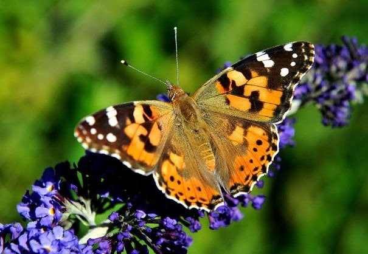 | |
| Image papillon.ppm | Sa composante verte vue comme une image en niveaux de gris |
- Note
- La pré-incrémentation seule
++itGreenmarche car on n'exploite pas la valeur de l'itérateur. On peut donc directement appeler cet opérateur écrit dans la super-classeConstIterator. -
Si on veut écrire une expression comme
*itGreen++alors l'opérateur de post-incrémentation (operator++(int)) par défaut deContainer::const_iteratorn'est pas correct (il retourne unContainer::const_iteratorau lieu d'unGenericConstIterator). On écrirait donc les lignes suivantes:
8 Créer les nouveaux accesseurs à la composante rouge et bleue
Ecrivez maintenant deux nouvelles classes ColorRedAccessor et ColorBlueAccessor. Ecrire alors un nouveau programme save-channels.cpp qui prend une image en entrée et sauvegarde 3 images en sortie, une par composante couleur. Ainsi,
prompt$ ./save-channels papillon.ppm
| Image papillon.ppm | Sa composante rouge (papillon_red.pgm) |
| Sa composante verte (papillon_green.pgm) | Sa composante bleue (papillon_blue.pgm) |
Les insectes butineurs (abeilles, guêpes, papillons) voient beaucoup mieux le bleu que nous (et d'ailleurs ils voient aussi un peu dans l'ultra-violet). L'image en composante bleue montre combien les fleurs (violettes) ressortent par rapport au fond vert, ceci afin d'attirer les insectes butineurs.
9 Itérateurs génériques non constants
Nous avons fait l'itérateur générique en lecture. Il faut faire maintenant l'itérateur générique en lecture/écriture (i.e. non const). Ce n'est pas difficile, il suffit de créer une classe générique GenericIterator sur le même modèle que GenericConstIterator, mais en dérivant cette fois de Iterator. L'opérateur de déréférencement pour les lvalue (lecture/écriture) s'écrit ainsi:
La seule différence avec l'opérateur lecture seule est le type retourné. Il ne vous reste plus qu'à écrire les méthodes génériques begin, end, et start sur le même modèle que précédemment.
A titre d'illustration, l'extrait de code suivant transforme une image couleur de façon à donner l'illusion de la voir sur les vieux écrans cathodiques couleur. Sur ces écrans, on voyait nettement que les composantes rouge, vert et bleu étaient affichées côte à côte. Le code visite l'image couleur, et ne garde qu'une composante à chaque pixel, en alternant rouge, vert et bleu, les autres étant mises à zéro.
Cela donne pour l'image kowloon.ppm:
| 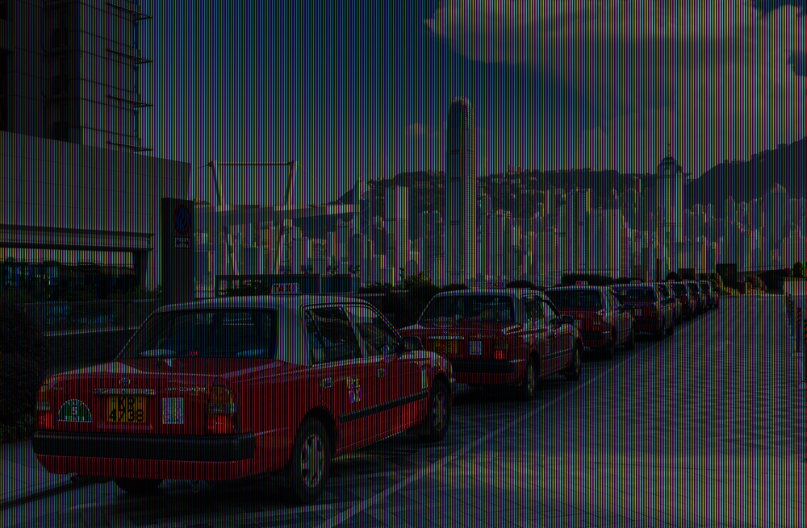 | 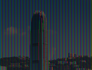 |
| Image kowloon comme sur les vieux écrans | Zoom dessus |
Vérifiez donc que vos itérateurs fonctionnent correctement en créant ce petit programme.
10 Espace TSV (HSV) et histogramme d'une image couleur
Au TP précédent, vous avez vu comment calculer l'histogramme d'une image en niveaux de gris (voir 7 - Histogramme et Histogramme cumulé d'une image.). Qu'en est-il d'une image couleur ? Tel quel, cela n'a pas vraiment de sens de calculer l'histogramme dans l'espace RGB. En revanche, cela a plus de sens dans un autre espace de couleurs appelé Teinte Saturation Valeur (TSV) ou Hue Saturation Value (HSV) en anglais. La page [http://fr.wikipedia.org/wiki/Teinte_Saturation_Valeur Wikipedia TSV] décrit cet espace de couleur ainsi que les fonctions pour transformer RGB vers TSV et réciproquement.
Nous allons définir l'histogramme d'une image couleur comme l'histogramme des valeurs (au sens de TSV) des pixels. Pour ce faire, il faut d'abord enrichir la classe Color, car elle ne comporte la méthode Color::getHSV pour convertir RGB vers TSV, mais pas l'inverse. Ecrivez donc la méthode de Color qui réalise la transformation TSV vers RGB, dont le prototype sera:
Ensuite, nous pouvons maintenant écrire un nouvel accesseur vers la valeur d'une couleur. Sa structure est ainsi, qu'il s'agit de compléter:
Il reste maintenant à écrire l'algorithme qui calcule l'histogramme et l'histogramme cumulé des valeurs de l'image couleur. Ecrivez donc une classe Histogramme qui contiendra deux tableaux de 256 entrées double, l'un pour l'histogramme \(h_I\), l'autre pour l'histograme cumulé \(H_I\). Pour calculer l'histogramme sur des images arbitraires, cette classe aura une méthode générique
qui parcourera l'intervalle [it,itE) pour calculer son histogramme et son histogramme cumulé. Ainsi on pourra se servir des histogrammes indifféremment pour les images couleurs et niveaux de gris, comme ci-dessous:
Ecrivez maintenant le programme histogramme qui prend en entrée une image couleur et qui sauvegarde une image en niveaux de gris qui représente l'histogramme des valeurs de l'image couleur.
prompt$ ./histogramme kowloon.ppm kowloon-h.pgm
| 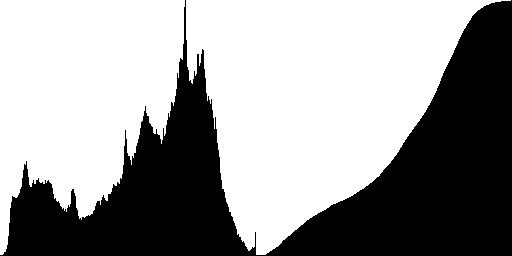 | |
| Image kowloon.ppm | Histogramme (à gauche) et histogramme cumulé (à droite) |
On note que l'image kowloon.ppm n'est pas parfaitement bien balancée.
11 Egalisation d'image couleur
D'après le TP précédent (7 - Histogramme et Histogramme cumulé d'une image.), dès que l'on a un histogramme cumulé d'une image, il est maintenant facile d'égaliser l'image pour la rendre bien balancée. On reprendra donc la formule du TP précédent pour écrire la méthode int egalisation( int i ) const de la classe Histogramme.
On utilisera cette fonction d'égalisation mais sur les valeurs des couleurs, via nos itérateurs génériques avec accesseur ColorValueAccessor. Vous écrirez donc le programme egaliseur-couleur.cpp qui réalise cette égalisation d'une image couleur. Par exemple
prompt$ ./egaliseur-couleur kowloon.ppm kowloon-eg.ppm prompt$ ./egaliseur-couleur papillon.ppm papillon-eg.ppm
| Image kowloon.ppm | Image kowloon.ppm dont les valeurs sont égalisées |
| 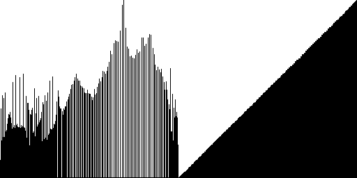 | |
| Histogramme (à gauche) et histogramme cumulé (à droite) | Histogramme (à gauche) et histogramme cumulé (à droite) |
| 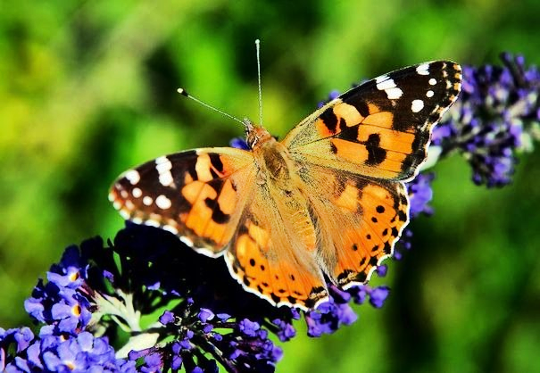 | |
| Image papillon.ppm | Image papillon.ppm dont les valeurs sont égalisées |
| 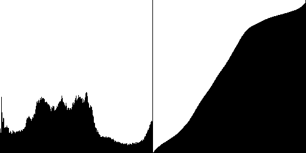 | 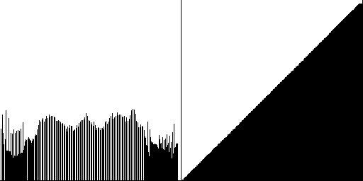 |
| Histogramme (à gauche) et histogramme cumulé (à droite) | Histogramme (à gauche) et histogramme cumulé (à droite) |
12 Un peu d'imagination
Proposez un traitement quelconque (effet artistique, transformation sepia, flou, filtrage de bruit, fusion de photos, tourner les couleurs de 60°, saturer (rendre criard) ou désaturer (rendre pastel) une image, ...) et mettez-le en oeuvre avec vos classes génériques.
Voici quelques exemples obtenus en faisant des filtres différenciés suivant les canaux (R,G,B ou H,S,V).
- 5 dilations morphologiques sur les 3 canaux RGB (élément structurant carré 3x3), suivis de 5 érosions morphologiques sur les 3 canaux RGB, suivi d'un rehaussement de contraste (alpha=5) sur le canal V.
| 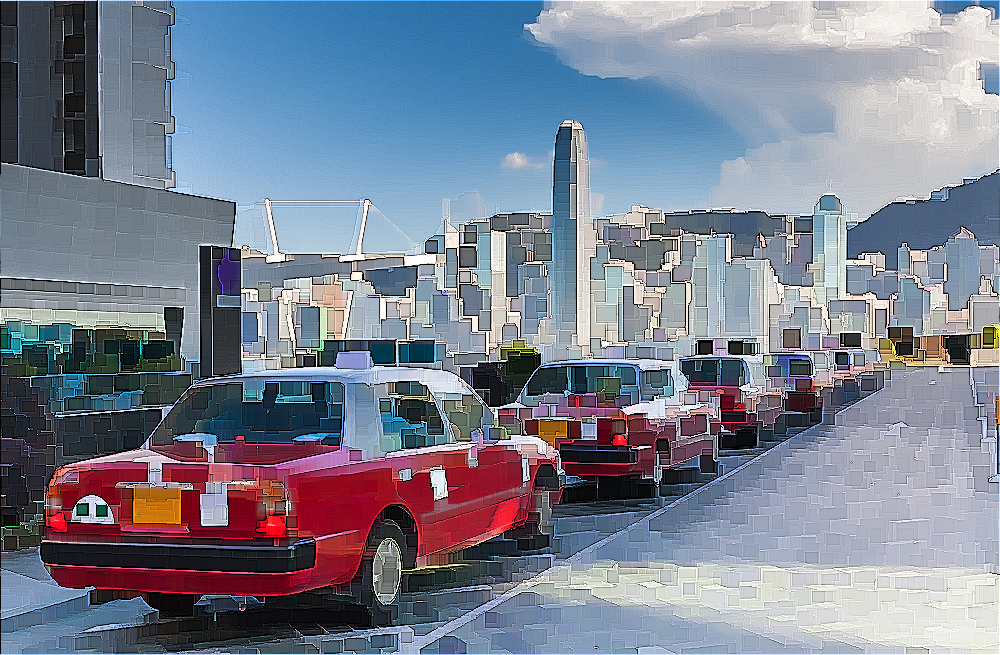 |
- dilation morphologique sur le canal V (élément structurant disque de rayon 5), suivis d'une ériosion morphologique sur ce même canal, suivi d'un rehaussement de contraste (alpha=1) sur le canal V.
| 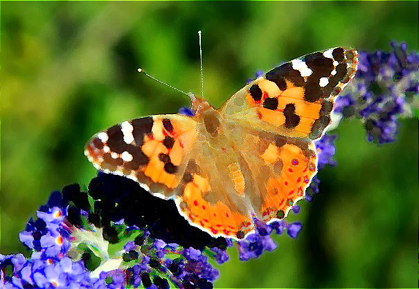 | |
 | 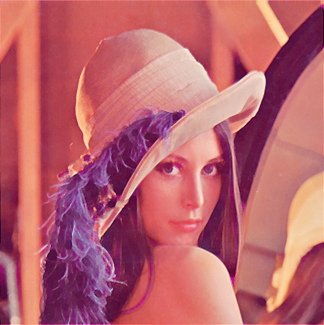 |
- atténuation des couleurs vert et bleu, en baissant la saturation autour de ces couleurs (on regarde la valeur de teinte H), et si elle est autour de vert ou bleu on abaisse la saturation S).
| 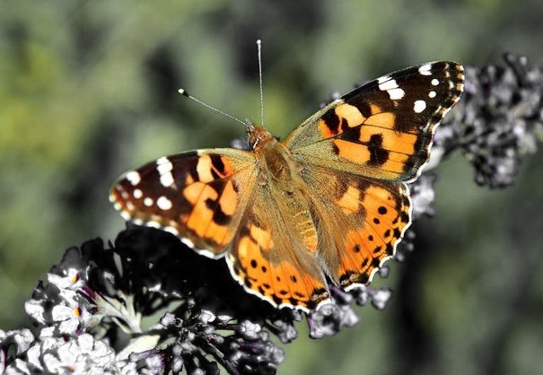 |
- atténuation des couleurs vert et bleu, en baissant la saturation autour de ces couleurs (on regarde la valeur de teinte H), et si elle est autour de vert ou bleu on abaisse la saturation S). Enfin, on décale la teinte de -60° sur le résultat.
- dilation morphologique sur le canal S (élément structurant disque de rayon 5), suivis d'une ériosion morphologique sur ce même canal, suivi d'un rehaussement de contraste (alpha=1) sur le canal V.
13 TP à rendre
Vous écrirez un compte-rendu de ce TP (format Open office, Word, texte, PDF, LaTeX au choix) dans lequel vous préciserez les points suivants :
- nom(s), prénom(s), groupe (monôme ou binôme)
- Vous listerez d'abord les points du TP que vous avez abordés, en précisant si selon vous, vous avez traité complètement ou traité partiellement la question. Précisez aussi pour chaque question si votre code fonctionne ou dans quelle mesure il fonctionne.
- vous préciserez pour chaque partie quels sont les fichiers entête et sources que je dois regarder, et éventuellement le programme que je dois compiler/relancer.
- n'hésitez pas à étoffer de commentaires utiles vos travaux, ou d'images de tests.
- vous placerez dans une archive (zip ou tar.gz) votre compte-rendu ainsi que vos sources/entêtes/makefile, de façon à ce que je puisse tout recompiler en tapant "make".
- le nom de votre archive sera de la forme
TP-XXX-YYY.*oùXXXetYYYdésignent les noms respectifs des étudiants du binôme. - vous m'enverrez votre archive via TPLab avant la fin de la séance. Vous pouvez m'envoyer votre version finale avant une date à définir .